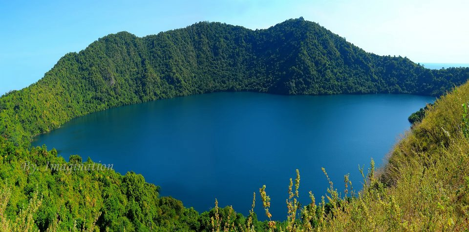
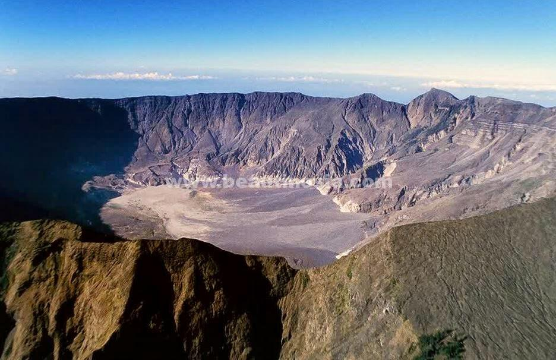
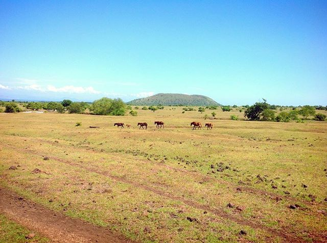
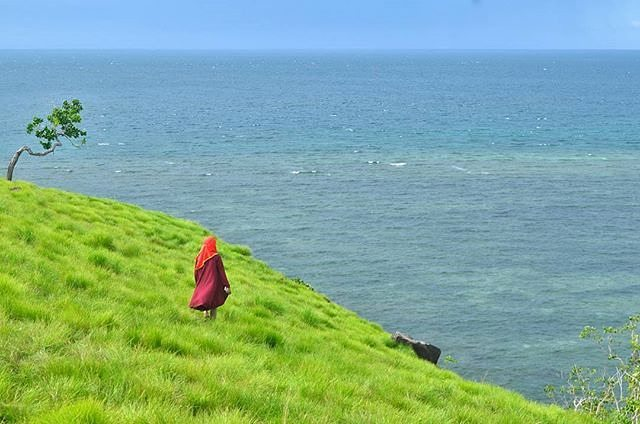

5 Tempat Wisata Pilihan Di Dompu Nusa Tenggara Barat
November 14, 2017 Views : 14,99999Bukan hanya Lombok saja tujuan wisata di provinsi Nusa Tenggara Barat. Menyeberang ke timur ada Pulau Sumbawa yang juga menyimpan segudang potensi wisata. Di tengah pulau ini terdapat daerah bernama kabupaten Dompu yang mendunia lewat Gunung Tambora, sebuah gunung yang sempat mengubah iklim dunia dan membawa bencana di awal abad ke-19 akibat letusannya yang maha dahsyat. Kabupaten Dompu diapit oleh kabupaten Sumbawa di sebelah barat dan kabupaten Bima di sisi timur. Di sebelah barat kabupaten ini menghadap ke Teluk Saleh yang dikenal sebagai surga bahari di Pulau Sumbawa. Masih banyak lagi tempat-tempat wisata menarik yang bisa dikunjungi di kabupaten ini. Berikut Travelingyuk pilihkan 10 diantaranya yang paling menarik.
1. Pantai Lakey, Surga Surfing Wisatawan Mancanegara
Kabupaten Dompu menyimpan surga surfing untuk para peselancar dunia lewat Pantai Lakey di desa dan kecamatan Hu’u sehingga warga setempat juga menyebutnya dengan Pantai Hu’u. Pantai Lakey adalah pantai yang paling populer dan menjadi andalan wisata kabupaten Dompu. Tak heran jika fasilitas di pantai ini sudah cukup memadai.
Kebanyakan pengunjung yang datang ke Pantai Lakey adalah para surfer bule. Ombak di pantai ini berukuran cukup besar dan stabil sehingga sangat pas untuk kegiatan berselancar. Setiap tahun pemerintah kabupaten secara rutin menyelenggarakan kompetisi selancar internasional. Masalah akomodasi untuk menginap dan makan jangan diragukan lagi, pantai ini sudah dilengkapi untuk semua jenis akomodasi tersebut.2. Pulau Satonda, Pulau Dengan Danau Air Asin yang Melegenda
Datang ke kabupaten Dompu traveler punya kesempatan untuk mengunjungi sebuah pulau yang ajaib bernama Pulau Satonda. Banyak keajaiban yang bisa dijumpai di pulau ini. Di tengah Pulau Satonda terdapat danau kawah yang besar. Uniknya air danau ini memiliki rasa asin layaknya air laut. Padahal laut berada lumayan jauh dari posisi danau.
Usut punya usut air dulu air danau di Pulau Satonda adalah air tawar. Setelah Gunung Tambora meletus, mengakibatkan tsunami besar yang membuat air laut tumpah hingga ke danau di pulau Satonda. Sejak saat itu danau ini berubah rasa menjadi asin. Sedangkan di sekitar danau terdapat pohon yang “berbuah” batu. Pohon tersebut diberi nama Pohon Harapan, sedangkan batu-batu yang menggantung di pohon adalah simbol dari harapan seseorang yang menggantungnya. Setelah harapannya terkabul orang yang bersangkutan akan mengambil kembali batu tersebut.3. Gunung Tambora, Ikonnya Kabupaten Dompu
Gunung Tambora adalah destinasi yang wajib dikunjungi di Dompu apalagi traveler pecinta adventure, wajib mendaki hingga ke puncaknya di ketinggian 2.851 mdpl. Gunung Tambora adalah ikon wisata di kabupaten ini, gunung ini pula yang namanya telah terkenal hingga ke mancanegara akibat dari erupsi maha dahsyatnya di tahun 1815 yang menyebabkan perubahan iklim global.
Gunung Tambora sekarang menjadi tuan rumah dari festival tahunan. Sejak tahun 2015 kala Dompu menyambut peringatan 2 abad letusan Gunung Tambora dengan kegiatan bertajuk “Tambora Menyapa Dunia” kawasan di sekitar gunung ini telah ditetapkan sebagai taman nasional. Ada dua rute pendakian yang paling banyak dipilih traveler, pertama rute dari desa Pancasila dan rute lainnya melewati jalur Doro Ncanga dimana menjadi rute favorit lantaran traveler bakal melewati hamparan padang savana yang seperti di Afrika.4. Padang Savana Doro Ncanga, Savana Afrika di Timur Indonesia
Padang Savana Doro Ncanga sangat populer di Dompu sebagai salah satu tujuan wajib kunjung wisatawan. Padang savana ini ukurannya sangat luas dan bisa traveler temukan di kawasan desa Calabai, kecamatan Pekat atau di kaki gunung Tambora. Saking luasnya traveler yang melintasi padang savana ini butuh waktu sekitar 30 menit berkendara untuk melintas dari ujung timur ke ujung barat.

Di bagian selatan Savana Doro Ncanga terdapat Teluk Saleh sedangkan bagian utaranya akan nampak Gunung Tambora yang berdiri dengan gagah perkasa. Traveler yang baru saja main-main air di Teluk Saleh dan mau melanjutkan perjalanan ke Gunung Tambora pasti melewati jalur ini, dan bisa dipastikan pula banyak dari mereka yang berhenti sejenak untuk menikmati keindahan alam savana tersebut. Apalagi kalau lagi beruntung, akan terlihat sekumpulan hewan liar yang merumput di sana.
5. Bukit Matompo, Spit Sunset yang Luar Biasa Indah
Ada satu lokasi wisata yang lagi naik daun di Dompu yaitu Bukit Matompo. Bukit setinggi 100 meter yang menghadap laut lepas ini terletak di desa Mbuju, kecamatan Kilo. Bukit ini menawarkan pemandangan indah berupa padang rumput yang hijau serta sayup-sayup puncak Gunung Tambora serta tak ketinggalan hamparan laut yang biru di hadapannya.

Dalam beberapa waktu terakhir, Bukit Matompo sangat ramai dikunjungi wisatawan domestik terutama pada waktu sore hari. Pemandangan langit jingga khas matahari terbenam bisa dinikmati dengan sempurna dari atas bukit ini. Apalagi untuk menikmati suguhan alam yang indah ini traveler tidak perlu mengeluarkan biaya alias gratis.